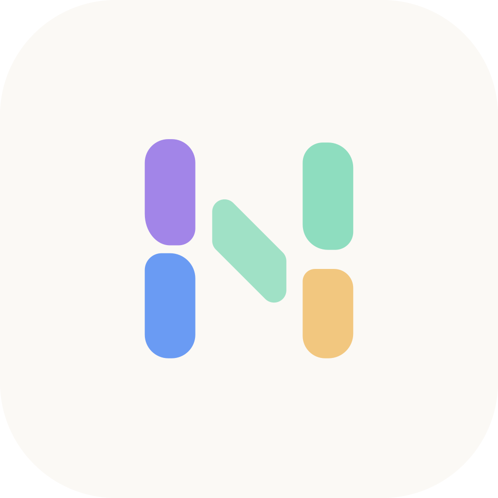
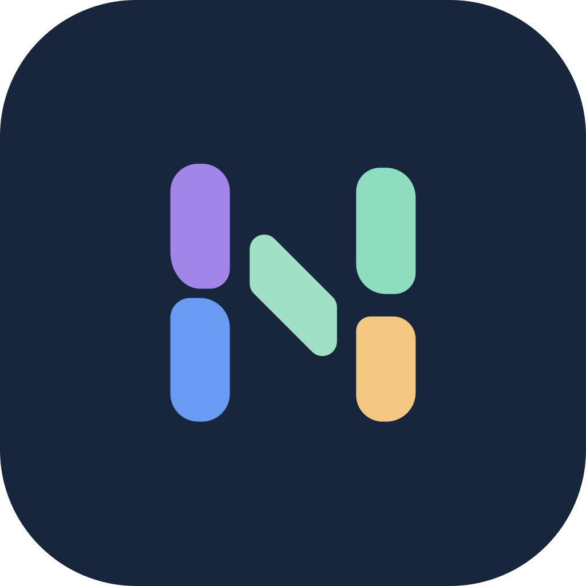
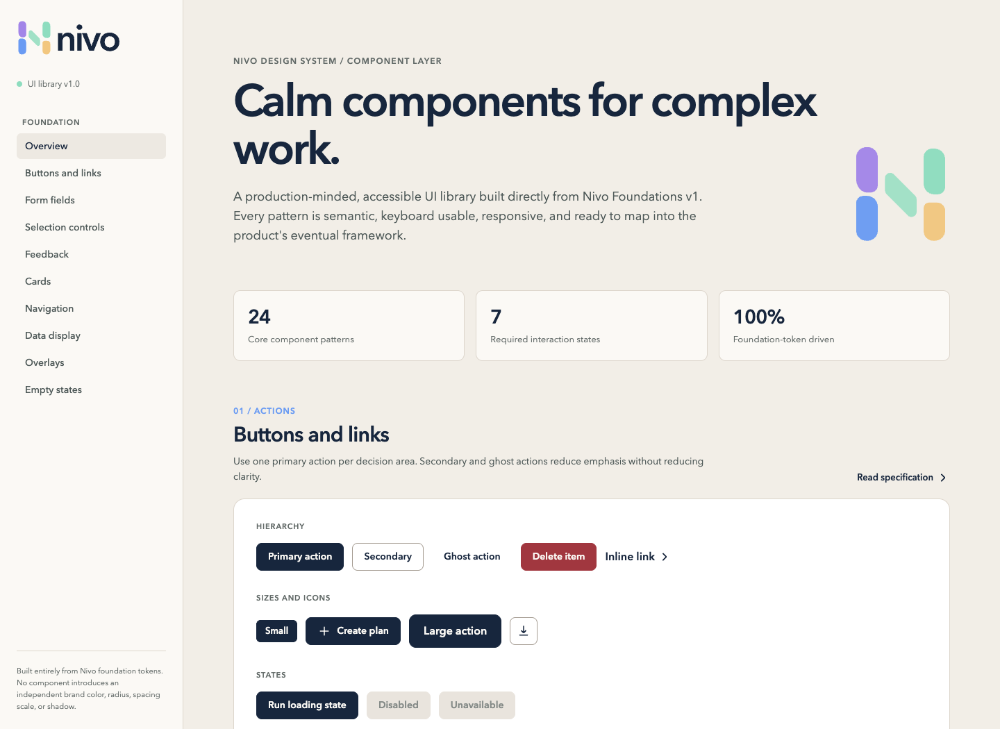
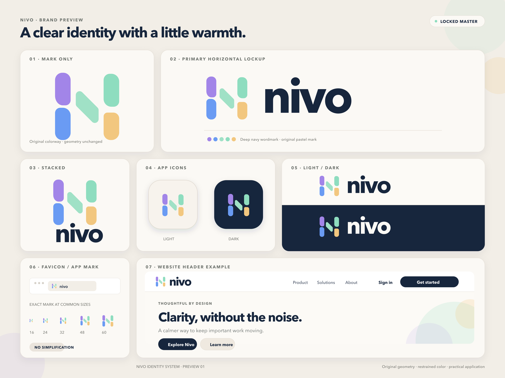

Calm by default
Reduce visual noise so the next useful action stays clear.
One shared source for Nivo’s identity, interface foundations, component patterns, and practical applications—readable by people, agents, and production code.
Reduce visual noise so the next useful action stays clear.
Use restrained pastels to support trust and approachability.
Responsive, accessible patterns designed for complex work.
00 / HOW THIS WORKS
Every visual on this site is driven by the same files that agents and developers consume. When values disagree, the token file wins; when a logo depiction disagrees, the official asset wins.
Machines
JSON, CSS, semantic HTML, and framework-neutral component behavior.
Open token JSONPeople
Browsable foundations, live component states, examples, and usage rules.
Browse foundationsTeams
Versioned updates through pull requests, automated checks, and clear ownership.
Contribution guide01 / BRAND
The mark’s geometry is locked. Use the supplied SVG files exactly as provided—never type, trace, simplify, or regenerate the logo.



02 / FOUNDATIONS
Deep navy creates structure. Greige backgrounds soften the canvas. Pastels add warmth without carrying semantic meaning.
Select a token to copy its hex value.
Inter for product and web.
Thoughtful by design.
64 / 72 · 600Keep important work moving.
40 / 48 · 600Clear context. Confident action.
24 / 32 · 600Nivo uses calm, direct language that explains what matters and what someone can do next.
16 / 24 · 400SUPPORTING CONTEXT
12 / 16 · 500Subtle structure, never decoration.
4px8px16px999px0 1px 2px0 8px 24px0 18px 48pxSPACING / 4PX BASE
03 / COMPONENTS
Production-minded patterns built entirely from Nivo tokens, with documented states, responsive behavior, and accessible semantics.
Open interactive catalog
04 / APPLICATION
Examples demonstrate hierarchy and tone. They are not independent sources—foundations, components, and official assets remain authoritative.

Open full vector preview ↗05 / ACCESSIBILITY
Accessibility is a component requirement, not a final review step. Every interactive pattern needs a visible focus state, an accessible name, and an honest keyboard path.
Read the production checklistEvery control can be reached and operated without a pointer.
Focus is always perceptible and never removed without replacement.
Text or iconography carries status; color remains supporting information.
Content stays usable without page-level horizontal scrolling.
Movement respects user preferences and never blocks comprehension.
06 / RESOURCES
Download complete packages or work directly from the versioned source files in this repository.
Tokens, documentation, logo assets, icons, components, and visual references.
Download ZIP FOUNDATIONSPolished PDF reference for brand and interface foundations.
Open PDF TOKENSExact source values for agents, tooling, and platform implementations.
Open JSON OPTIONAL FIGMAThree-page visual working copy. GitHub remains the source of truth.
Download .sketch07 / GOVERNANCE
Every change should connect intent, exact values, visual documentation, and implementation.
Explain the user or product problem.
Change tokens, components, specs, and examples together.
Run accessibility, responsive, and visual checks.
Merge through a documented pull request.
Version the package and publish the site.